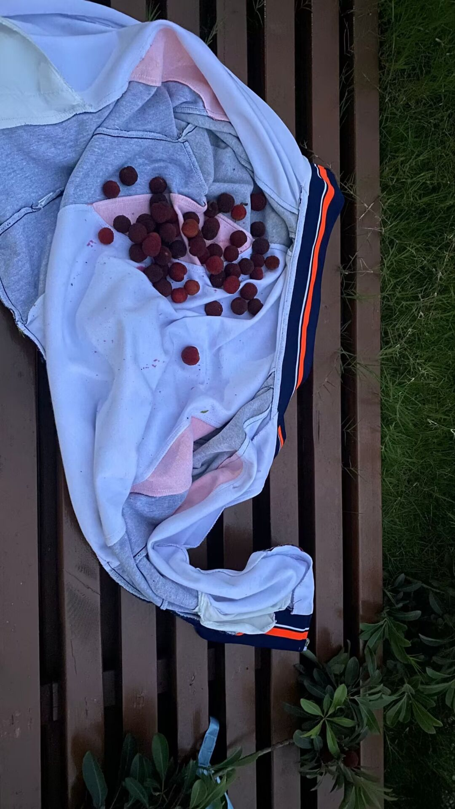
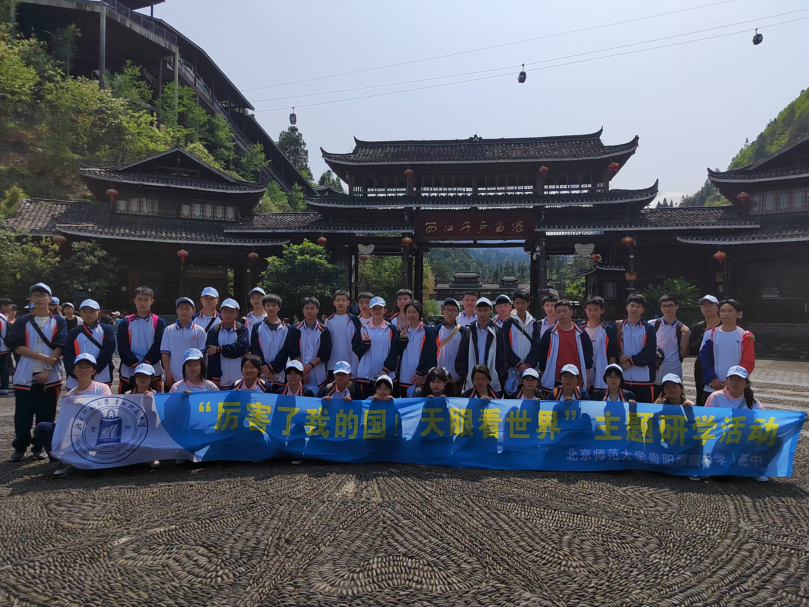
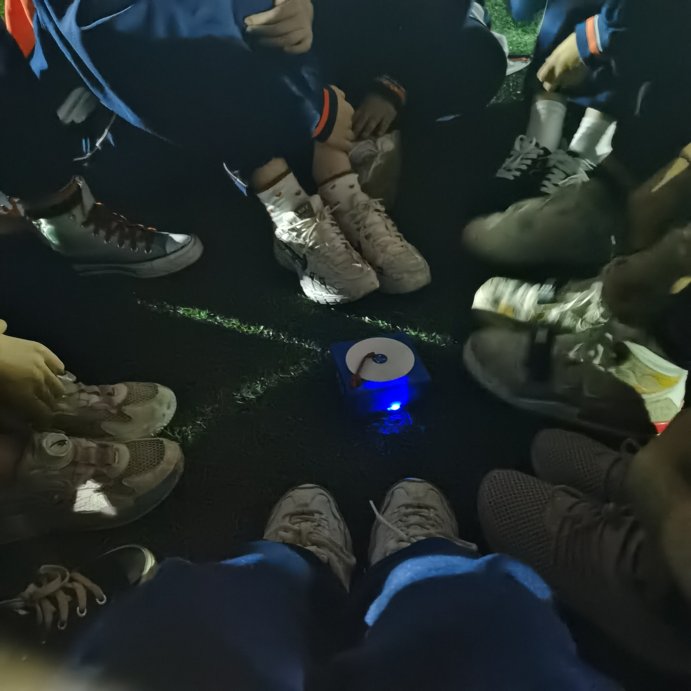
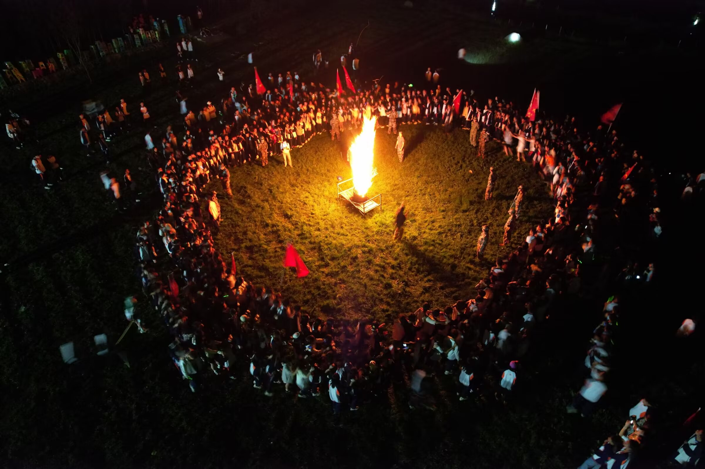
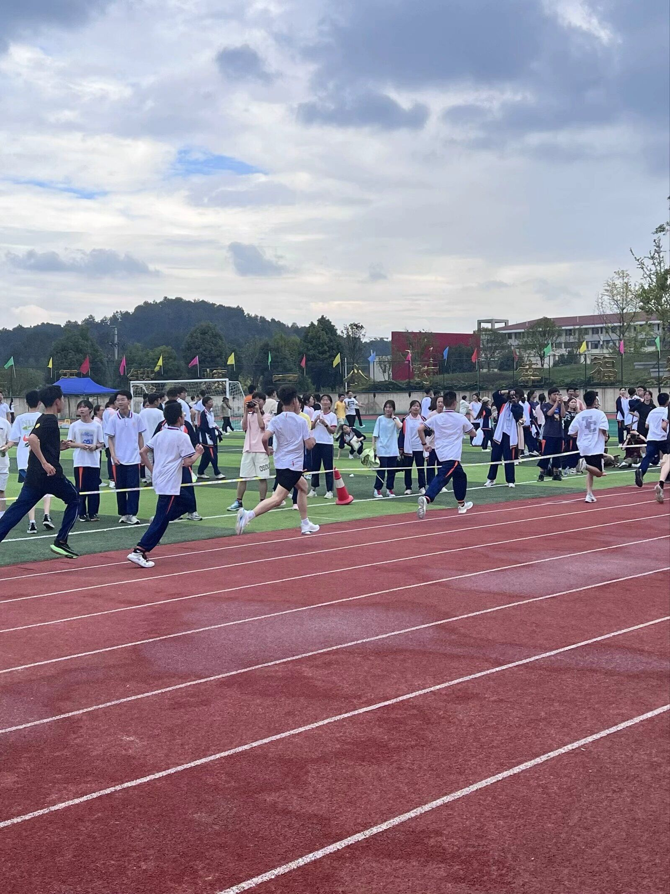
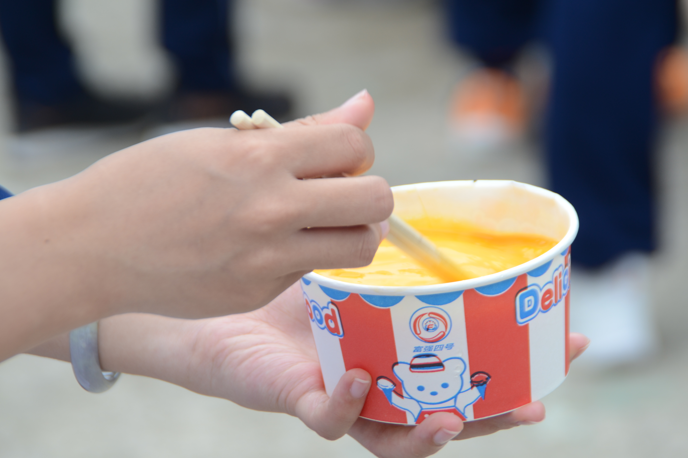
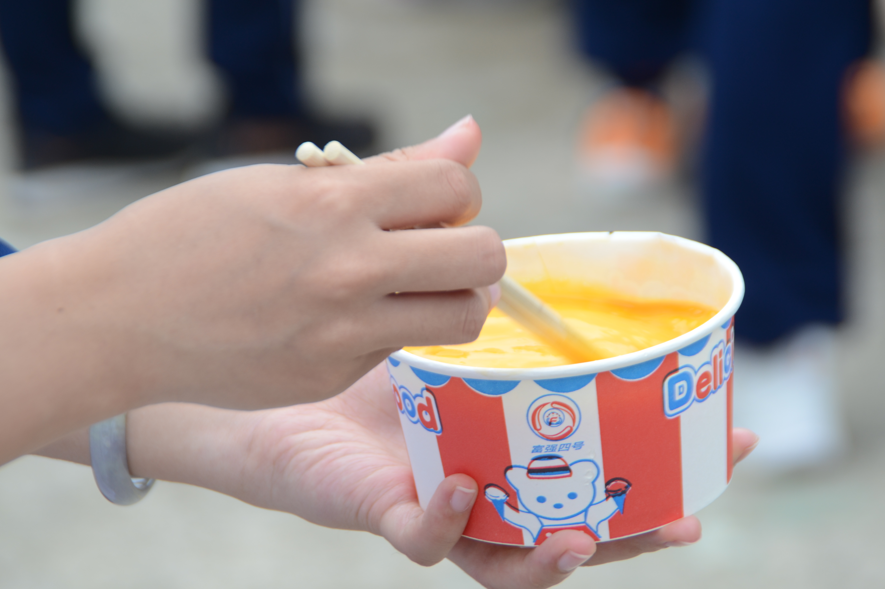

❀ 便携回忆录 · Memorie4 ❀

青春不散场，回忆永留存
愿我们都能在各自的道路上
闪闪发光，永远年轻
******************************************
这是一个便于任何人想回忆高中生活时
可以随时随地打开的一个小小相册
请向下滑动来了解使用方法吧！
\/
\/
\/
→使用方法 ˊᗜˋ
请仔细阅读以便你可以更好地使用^ ^
· 导航：
你可以通过点击顶部的导航进行不同学年的转换！
以便浏览高一、高二、高三的照片！
· 放大查看：
这个功能应该是作为一个相册最基础的吧！怎么现在才拿出来！
如果你想放大看，请双击放大；如果你想关闭，请点击旁边的地方以关闭放大的照片
→作者说 ˊᗜˋ
鸣谢&其他
· 鸣谢:
感谢为此网站提供图片的人~为了不透露隐私 此处用用户名标出:D
Komori、哈利路亚、纤云弄巧、枭夜行、Pity（贡献最大的人）、大雨瓢泼、（最帅的数学课代表兼篮球社社长）YC.、擅长画饼（老鼠）、Rain（蒸鱼头）、nn.（还好你存了视频QAQ）
· 作者想说
如果你有更多的照片想添加到本网站，请联系QQ2406474750或者发QQ邮件（同号）给我！感谢每一张照片用来拼成2025级四班的青春
PS.本篇语言特色会尽量接近与大家相处的口吻 感觉这样有代入感 当然陈述的部分还是会好好陈述的。！
· 备注：
制作将逐步完善，毕竟是个大工程，高一上因为资料过少所以暂时没有很完整地进行制作
高一下也是
如果有足够资料请及时联系作者！！！

海宝大作↗
❀第一学年❀
欢迎回到高一 * 我们的2022-2023年
高一，初到北师大的一年，分班考试后我们相识
那是青涩的开始，是梦想起航的地方
初入校园的忐忑与期待交织
新的教室，新的面孔，新的开始
高一，是探索的年纪
是发现兴趣爱好的开始
是建立友谊桥梁的起点
这一年，我们或许迷茫过
但也收获了最纯粹的欢笑
留下了最珍贵的青春印记


*请使用上方的下拉菜单选择具体学期查看照片*
第一学年上学年
放在前面想说的
高一因为刚刚分班 脱离了原来熟悉的环境 高一上还不幸遇到疫情 所以似乎好像没有太多照片 所以能找的尽量都找了
且大部分都是高一下的 如果有补充资源请在首页联系方式联系我~
风景碎片
引用pity曾经QQ签名的 就是"此页留白 以避翻阅"

↑来自社长 9.16疫情封控的云。我在学校很想家
↑芒果拍的杨梅 她说要我放进去
谁还记得。当时兵哥在行政楼旁边的杨梅树上摇杨梅，他真的爬上树了！我跟小鸡还是谁从旁边刚吃完晚饭路过，差点被塞了一颗杨梅，实在是太好玩了。！周围当时还有好多人在围观！
第一学年下学年
研学-2023.4
没想到研学的时间居然比运动会早
我只记得D1去的蜡染小镇之..
研学真的是白月光篇了 真的是遇上了最好的一届也是最松的一届
其实最开始还对整个研学路线抱有不满，毕竟谁也不熟，走的路线还是坐车的时间最长的一条
但也就是因此，有这么多这么多的羁绊开始连结..
PS.照片提供者Komori
Ta说虽然当时跟大家谁也不熟但是后来再看这张照片隐隐感觉拍到的是主播 社长和她的朋友们


第一次义卖
说实话对于第一次义卖只记得班长一直在廊桥下苦命坐摊了，不仅如此还没啥货好卖的！因此当时还是挺期待下一次义卖能卖成啥样欸..
看到不同社团卖的商品也很有意思！尤其是化学社的蓝晶雨 还有十班卖的小贴纸也真的很可爱~！最后好像也
因为没啥好写的我们放一张最经典的、喜闻乐见的———年级主任烤肠吧！·······················································→
合唱比赛-2023.5
依稀记得当时唱的是平凡之路和我爱你中国？！当时练习也用了很久的时间 还记得前几天看到了nn在空间还是朋友圈发：果然还是高中合唱最好听哈哈哈哈我也觉得！（编辑这条的时间是：2025/11/24）
没想到居然得了三等奖
PS.依稀记得平凡之路是我选的O(∩_∩)O↓

第二学年
欢迎回到高二 * 我们的2023-2024年
走过懵懂高一，我们迎来了承上启下的高二
学科深度增加，目标逐渐清晰
文理分科的抉择，未来方向的思考
友谊在朝夕相处中愈发深厚
梦想在日夜奋斗中愈加明朗
我们不再是初来乍到的新生
这一年，我们真正找到了属于自己的节奏
在挑战中突破，在压力中成长
学会了平衡学业与兴趣，掌握了更高效的学习方法

只是当初运动会时大家聚在一起唱歌 好青春啊！
高二也真的发生了好多事~！还好pity的相机记录了好多TAT最可惜的是合唱真的没视频！我还想再听一次紫荆花开放和窗外的世界...
"篝火燃起的瞬间 就是永恒"
谁航拍的这个..永爱一辈子啊T T
*请使用上方的下拉菜单选择具体学期查看照片*
第二学年上学年
运动会-2023.9
曾经嫌运动会项目太多 但毕业后再也没有这么热闹的运动会

我不说谁能知道我们在雨下罚站十分钟！
而且当时天天唱七子之歌和做手势舞，实在是太洗脑了 但是现在都没啥印象了
PS.感谢Pity和枭夜行这俩中国好同桌提供的照片，是不是对当时没什么印象了？
ENJOY THE VIDEO~:D！
第二学年下学年
第二次合唱比赛-2024.5

最好听中的最好听。怎么没人给我们颁一等奖
谁记得比赛开始前还利用晚自习练歌。！大家一起在音乐教室唱稻香和夜空中最亮的星。
珍贵的视频资料来自于nn.看哭了居然存得有 我就说不可能没人有！
虽然视频没有上一首窗外的世界..但是两首歌都让我打开了华语新世界！紫荆花依旧是经典，人人到高三心里还能惦记的程度哈哈哈哈哈
在找到这个视频之后我就转发到粥群里了 sin说是空悲切
真是"只道当时是寻常"啊！
其实还有张照片
剩下的等待有缘人补充文案来描述这张图吧
主播写不出来了（力竭）
工训！-2024.6

 

第三学年
欢迎回到高三 * 我们的2024-2025年
只不过这次不再有高考的压力了（？）
那是曾经，
最后一年，全力以赴的冲刺
课桌上堆满的复习资料
黑板上倒计时的数字
空气中弥漫着奋斗的气息
清晨走廊的读书
深夜台灯的陪伴
模拟考的紧张与期待
彼此的鼓励成为前行动力
从青涩到成熟，从迷茫到坚定
三年的点滴汇聚成成长的模样
每一次挑灯夜战，每一次相互扶持
都是青春最动人的篇章
这一年，我们在压力中淬炼成钢
在挫折中学会坚持，在成功中懂得谦逊
用汗水浇灌梦想，用拼搏书写青春
高三，是收获的年纪
是为高中画上圆满句号的时刻
是迈向更广阔天地的起点..


*请使用上方的下拉菜单选择具体学期查看照片*
第三学年上学年
元旦晚会-2024.12

"谁还记得其实是要求每个人准备一个节目"


↖也是在元旦大饱口福了哈哈哈↗

第三学年下学年
班级合照-2025.6

高中最后一张班级合影~
誓师大会-2025.3